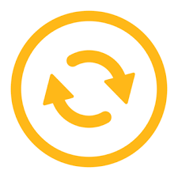

Список изменений на сайте
- - - Pre-release v4 - - -
Последний Pre-release
1) До конца исправлен весь код (в основном визуал и орфография)
2) Полностью обновлен блок ℹ️О сайтеℹ️
Список добавленных модов:
• Create
• Create Aeronautics
• Create Aeronautics: Compatability
• Create Crafts & Additions
Остальные моды в следующей релизной версии
- - - Pre-release v3.1 - 3.3 - - -
🕷️Баг-фиксы
1) Исправлены проблемы с безопасностью
Теперь есть защита от спама и ботов. Сайт будет стоять!
2) Исправлены проблемы с фантомным входом
Теперь авторизация работает стабильно и правильно. Лайки отображаются, ставятся, удаляются. Избранные сохраняются.
3) Инфо-кнопка слева от ВОЙТИ ЧЕРЕЗ GOOGLE
Теперь есть инфо-кнопка, при нажатии на которую отображается плашка со справкой для тех,
у кого проблемы со входом (Нажал крестик у всплывающем окне гугла/первый заход с Zapret)
- - - Pre-release v3 - - -
❤️Лайки, ⭐избранное, верстка и по мелочи!
1) ❤️Лайки и ⭐избранное
Теперь на сайте есть возможность зайти с помощью Google Аккаунт!
Что это дает? При заходе через аккаунт вы можете:
• Ставить лайки ❤️
• Добавлять моды в ⭐избранное (для того чтобы не потерять понравившееся моды)
2) Секретная панель - final race (я надеюсь...)
Теперь она генерит плашку с НОРМАЛЬНЫМИ отступами, для удобной вставки в код!
3) 📕Содержание
Теперь на страничках информационных кнопок доступна меню СОДЕРЖАНИЕ!
Вы можете нажать на него и выбрать блок, к которому хотите переместиться.
Для возращение обратно (на верх страницы) нажмите справа-снизу кнопку со стрелочкой.
Это позволяет очень удобно ориентироваться в этих статьях!
4) мелкие фиксы багов
Список добавленных модов:
• Voxy
• Distant Horizons
Все остальные удалил (по причинам разработки).
Верну их и добавлю все остальные 150 с лишним модов в следующей
Релизной версии (ну... я так надеюсь...)
- - - Pre-release v2 - - -
Доделанная страница - ℹ️О сайте и мелкие изменения )
1) ℹ️О сайте
Наконец сделана страница с руководством по сайту. Все изложено кратко, понятно и с картинками.
2) Секретная панель
Теперь можно удобно генерировать подробное описание
3) Подробное описание
Теперь при нажатии на кнопку [ ? ] на плашке мода, вас перекидывает не на
другую страницу, а просто появляется плашка с подробным описанием.
Она перекрывает основную страницу и блюрит задний фон
4) мелкие фиксы багов
Список добавленных модов:
• Voxy
• Distant Horizons
- - - Pre-release v1 - - -
Краткое описание функций сайта ( больше инфо будет в кнопке ℹ️О сайте )
1) Панель кнопок с информацией
2) Список модов с кратким описанием, ссылкой на Modrinth и с тегами для удобного поиска по фильтрам. Сортировка самих модов по алфавиту (для группы взаимосвязанных модов это правило это не работает). При не совпадении мода по фильтрам (Загрузчик, Версия майнкрафта), мод не исчезает из списка, а спускается вниз и становиться тусклым.
3) Поиск модов по названию/описанию и фильтрам
4) Секретная админ панель для быстрой генерации -li- элементов
Список добавленных модов:
• Advanced Peripherals
• AeronauticsCompat
• AppleSkin
• Architectury
• Armor Trim Item Fix
• ATMOSPHERICA
• BadOptimizations
• BaguetteLib
• Balm
• Better Snow Coverage
• Better Statistics Screen
• BetterF3
• CC: Tweaked
• Chat Heads
• ChatAnimation
• Chunky
• ClickThrough Plus
• Chat Animation [Smooth Chat]